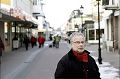

Fred Herman Gusten Granström
Musiker, fil.kand, kommunchef i Piteå, vd Piteå kommunföretag AB, vd Norrbotniabanan AB.
| Född: | 1947-05-17 Klubbfors, Markbygden, Piteå lfs, Piteå sn. [1] |
|---|
| Vigsel: | 1981-05-30 Strömnäs, Piteå, Piteå sfs, Piteå kn. [2] |
|---|
Noteringar
Gusten Granström kommunchef i Piteå
2005
VD för koncernen Piteå Kommunföretag, styrelseordförande i Nolia, styrelseordförande i Sparbanken Nord, styrelseordförande i Acusticum, styrgruppsordförande i Samtal för framtiden, medlem i Merkur, medlem i Rotary.
Norrbotniabanan AB
2008 bildade Landstinget i Norrbotten och Region Västerbotten samt kommunerna Umeå, Ro-bertsfors, Skellefteå, Piteå, Luleå, Boden, Kalix och Haparanda ett gemensamt bolag, Norrbot-niabanan AB, för att:
– ge det fortsatta arbetet en tydlig juridisk och organisatorisk plattform
– tydligt markera allvaret i regionens egen ambition och engagemang för att genomföra projektet
________________________________________________
Vad kanske få vet, är att Gusten Granstrtöm har ett förlutet som dansbandsmusiker i Umeåorkestern "Tord Janzéns" - orgel och sång. Sommaren 1972 medverkade Umeåbandet som husband på Piteås parkkvällar. PT gjorde då ett litet repotage, där journalisten Ulf Dahlberg presenterade orkestern.
Personhistoria
| Årtal | Ålder | Händelse |
|---|
| 1947 |
|
Födelse 1947-05-17 Klubbfors, Markbygden, Piteå lfs, Piteå sn [1] |
| 1956 |
8 år |
Systern Ebba Karoline Elenor Granström föds 1956-01-01 Forsheden, Fällfors fs, Byske sn [3] |
| 1975 |
28 år |
Fadern Tage Gerhard Birger Granström dör 1975-10-18 Forsheden, Fällfors fs, Skellefteå kn [4] |
| 1981 |
34 år |
Vigsel Birgit Margareta Gustafsson 1981-05-30 Strömnäs, Piteå, Piteå sfs, Piteå kn [2] |
| 2011 |
64 år |
Modern Anna Elisabet (Anna-Lisa) Öström dör 2011-08-03 Dammgatan 17, Lgh 1102, Skellefteå lfs, Skellefteå kn [5] |
Dokument
Källor
| [1] | SCB Födda BD Markbygden 26/1947 |
| |
| | |
| [2] | Mtl Sveriges befolkning 1985 |
| |
| | |
| [3] | Mtl Sveriges befolkning 1960 |
| |
| | |
| [4] | MTL 71, RTB 75, SDB7_04339544 |
| |
| | |
| [5] | FK 13, man91, SDB7_04503217 |
| |
|
 |
2019. Gusten Granström på Swedbanks årsstämma
Gusten Granström tror inte att Sparbanken Nord får ett minskat förtroende trots Swedbankkrisen.
Bild: Maria Johansson, Norrbottens-Kuriren
|
| |
|  |
| 2011. Gusten Granström |
| |
|
| 2008. Gusten Granström |
| |
|
| 1972. PT gjorde då ett litet repotage, där journalisten Ulf Dahlberg presenterade orkestern. |
| |
|
| 1972-07-05. Ulf Dahlberg, PT |
|

{kind=link}
{kind=link}
{kind=link}
{kind=link}